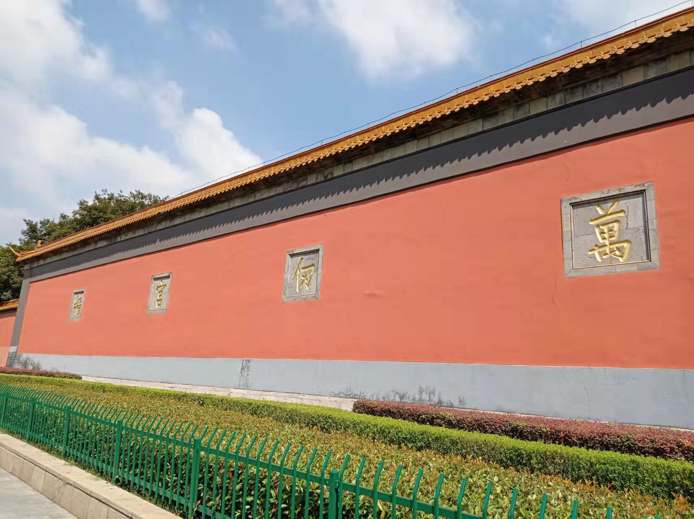
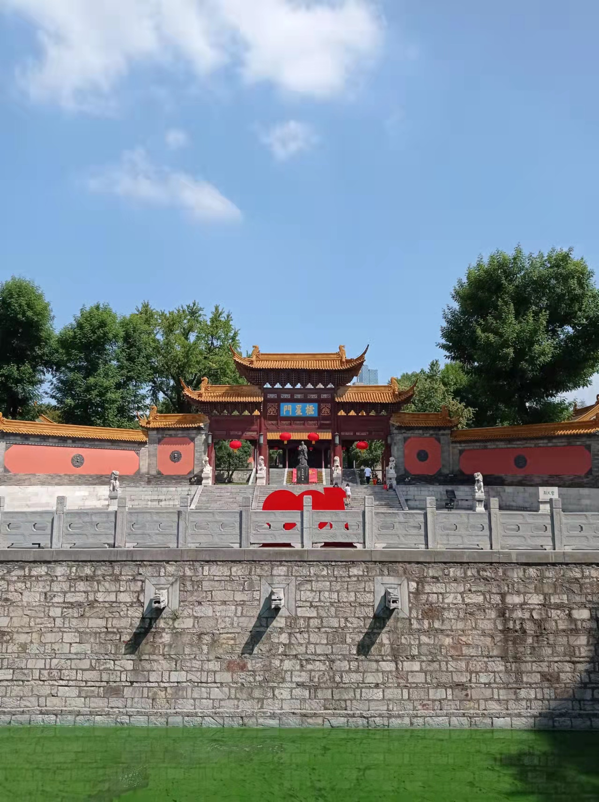
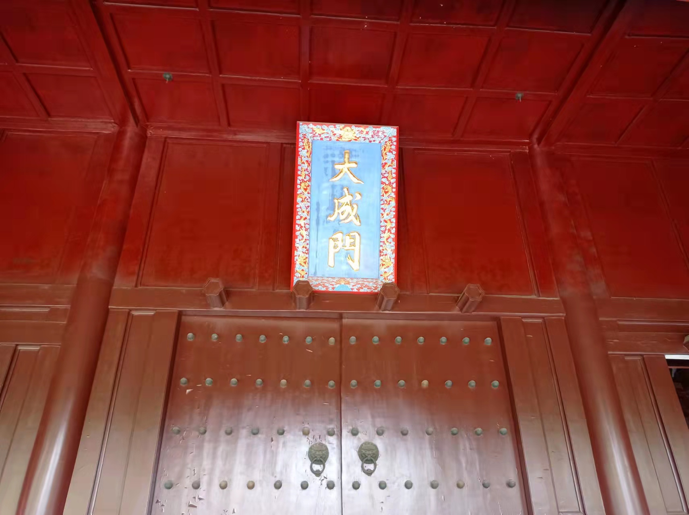

Welcome! My name is Buben Fu （Chinese：傅步奔）. I graduated with a PhD in Economics from Shanghai University of Finance and Economics in June 2020. I am currently
a lecturer at Nanjing University of Posts and Telecommunications. My research interests lie in macroeconomics and financial economics.
Education:
Ph.D. Economics, School of Economics, Shanghai University of Finance and Economics, 2014-2020.
M.A. Economics, Wuhan University, 2009.
B.A. Economics, Wuhan University, 2007.
Address: No.9 Wenyuan Road, Nanjing, 210023, China
Email: fububen at hotmail.com
NOTE: This is a personal webpage and any views or information reflect solely the author.
Publications
The Effects of Oil Price Uncertainty on China’s Economy, Energy Economics, 2022
with Qinhua Xu and Bin Wang
Monetary Policy Uncertainty and Bank Leverage: Evidence from China, Economics Letters, 2021
with Daqing Luo
The Transition of China’s Monetary Policy Regime: Before and After the Four Trillion RMB Stimulus, Economic Modelling, 2020
with Bin Wang
中国货币政策不确定性对宏观经济的影响——基于混合货币政策规则的分析, 世界经济文汇, 2020
with Daqing Luo
Working Papers
Demographic and Natural Interest Rates in China
with Bin Wang
Abstract: ABC.



Nanjing Chaotian Palace (Old Confucian Temple)
夫子之墙数仞，得其门者，或有大成。